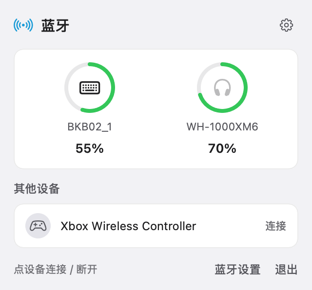
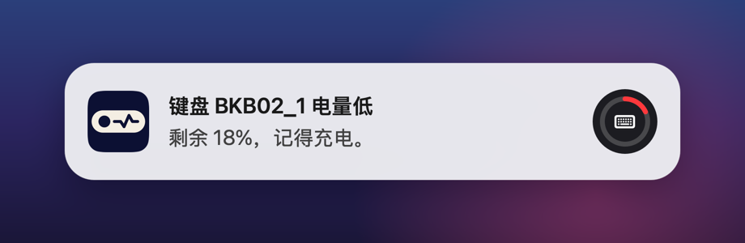

islet / 蓝牙电量
Mac 菜单栏怎么直接看到蓝牙耳机、键盘、鼠标的电量
装上免费开源的 islet，菜单栏里每台已连接的蓝牙设备都会显示一个电量圆环：绿色充足、橙色偏低、红色不足。点开是蓝牙面板，可以看具体电量、连接或断开设备；电量低时还会发通知。
菜单栏里的电量圆环
每台已连接的设备一个圆环，环的长短就是电量，扫一眼就知道哪个快没电了。
蓝牙面板

- 列出已配对的设备，点一下就能连接或断开。
- AirPods、Beats 分别显示左耳、右耳和充电盒的电量，图标按型号区分。
- 第三方键盘、鼠标和部分索尼耳机的电量也能读到。
- 蓝牙关闭时可以在面板里直接打开。
低电量提醒
电量低于设定值时发通知，标题写明是什么设备；岛上不显示蓝牙时也有效。
